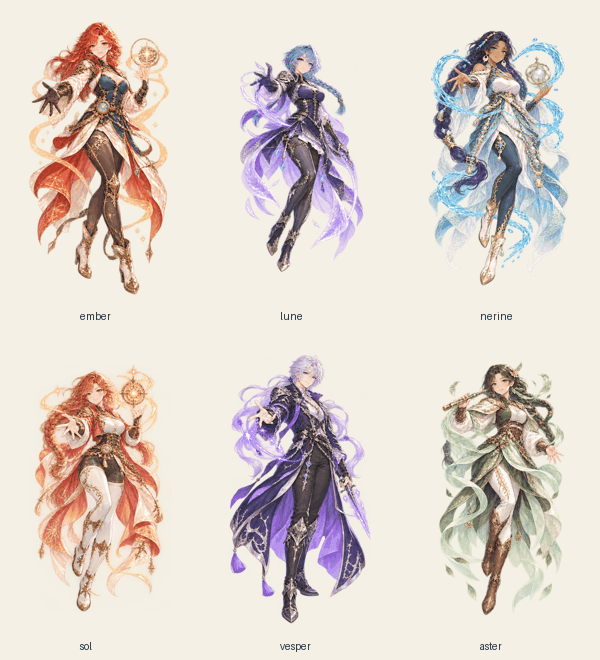

六位旅人直接平铺展示，人物与关卡可随时切换。
打开可玩 Demo ↗点击人物选择出战；每张卡片底部可以查看、配置该人物的装备。关卡页面直接进入战斗，通关后自行决定下一步。仍保留三关顺序解锁。
以下为生成的四帧立绘循环 GIF。游戏内使用同一组本地动画帧；所有内容随试玩包内嵌。

iOS 6.4.0（14）已在原 TestFlight 内测组可用。既有内测用户可打开 TestFlight 中的“星渡”，点击更新。
使用 imagegen 内置工具，参考原有六位角色分别生成四帧透明立绘。最终项目资源保存于 assets/roster-v13/，按人物 ID 保留 0–3 帧 PNG/WebP、strip.webp 与 idle.gif；原图在 source/，切片记录在 manifest.json。
Built-in imagegen; one independent call per hero, using assets/portraits-v3.9/{hero}-healthy.webp as the identity and costume reference. Hero IDs: ember, lune, nerine, sol, vesper, aster.
Use case: identity-preserve. Asset type: game full-body idle animation sprite sheet. Reference image: the attached {hero} full-body character is the identity and costume reference. Produce ONE transparent PNG sheet, exactly FOUR equal-width cells in ONE HORIZONTAL ROW, wide canvas 2048x1024 if possible. Each cell contains the SAME complete adult fantasy character from head to boots at the same scale, same head and feet anchor positions, same camera and expression, with generous transparent gutters. Preserve the detailed elegant painted anime face, hair color, all costume designs and colors, body proportions, accessories from the reference. Smooth idle loop frames A B C D: A relaxed original pose, B slight breathing rise and hair/ribbons breeze to right, C relaxed with a gentle blink and cloth halfway back, D hair/ribbons breeze to left returning toward A. Motion subtle and coherent, hands and magic ornament remain readable, face and torso stay aligned. Full body in EVERY cell, never crop hair, cape, hands or boots. Four separate sprites, no overlapping cells. Actual transparent background, no text, no labels, no frame borders, no checkerboard painting. No extra characters, no scene, no costume redesign. Suitable for 160px-wide character roster cards.